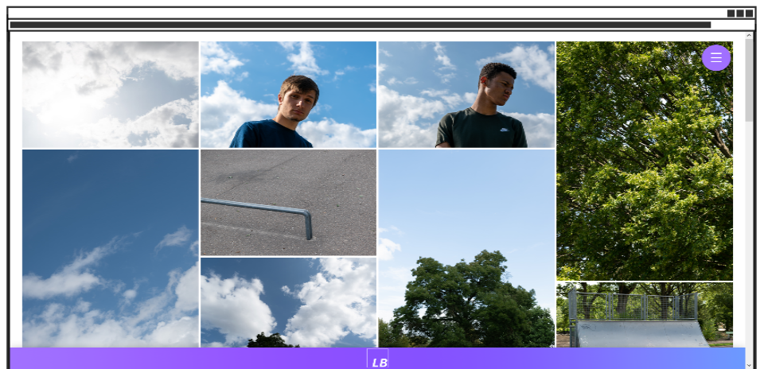
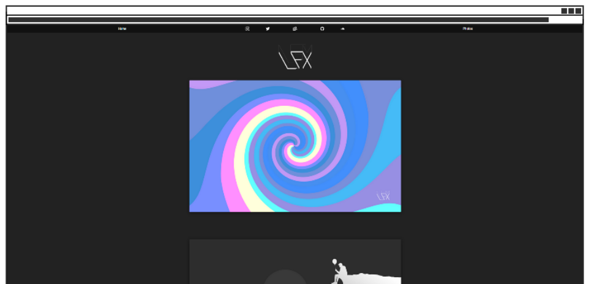
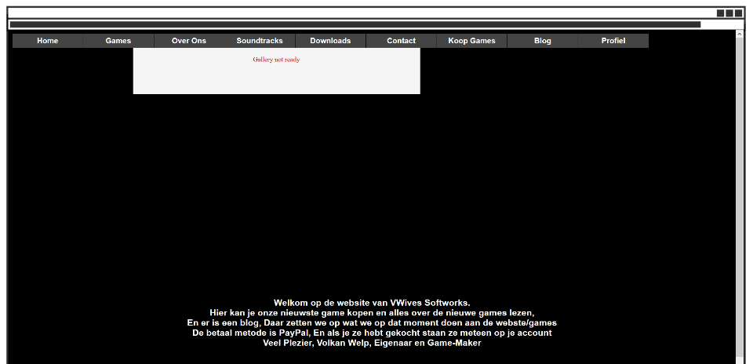

Projecten
2018 - heden
LB - Foto Portfolio website. - 2019
Deze website heb ik gemaakt om mijn recent gestarte hobby te weergeven, en voortgang voor mezelf bij te houden.
LB - Persoonlijke website. - 2018
Dit is mijn persoonlijke website. Hier heb ik links naar socialmedia, en andere pagina's van mij. Ook hou ik hier een portfolia bij van mijn Photoshop artwork.
2014 - 2018
VWaves - Game Studio website. - 2014
Dit is de eerste website die ik ooit gemaakt heb. Het is niet veel, en hij werkt na 5 jaar ook niet meer helemaal, maar het is waar het allemaal begonnen is. Het is voor een nooit bestaande gamestudio.
